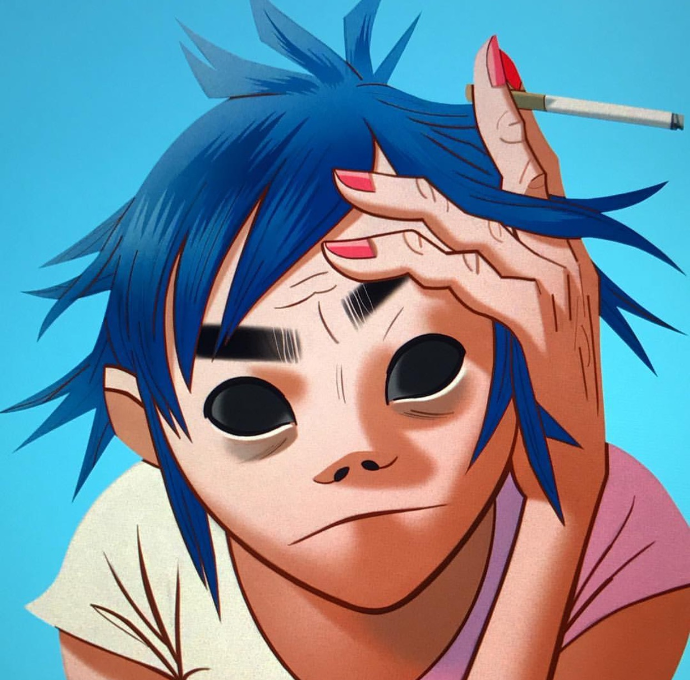
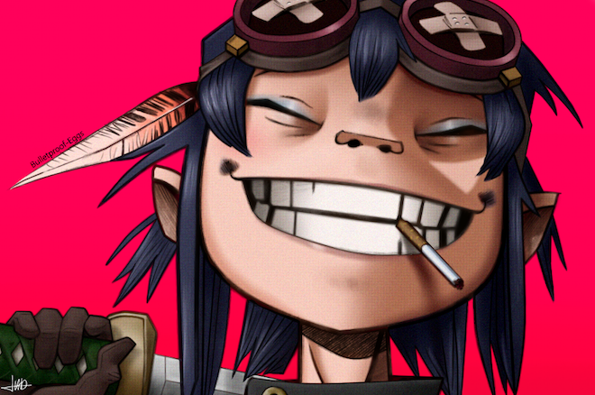
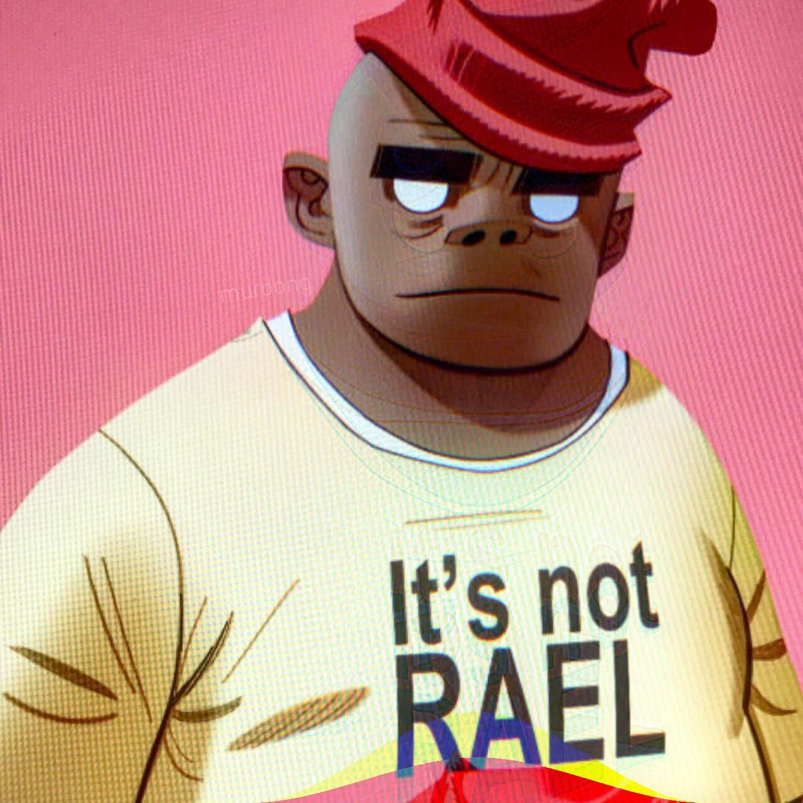

The Members of The Band
2D
character story
2-D was loosely inspired by a friend of Hewlett and Albarn who had worked with both Gorillaz and Blur.[2] Stuart Pot was born on May 23, 1978 to David and Rachel Pot. His father works as a mechanic and a fairgrounds worker, while his mother works as a nurse. He was born in Crawley, West Sussex, England, and attended St. Wilfrid's Catholic School. When he was 11 years old, Stuart was involved in an accident where he fell from a tree and hit his head. This caused all his natural brown hair to shed, until it eventually grew back in a deep azure blue color. The accident also caused him to experience frequent migraines, to which his mother supplied him with painkillers. At age 19, Stuart was hit in the face by Murdoc Niccals when he crashed his Vauxhall Astra into Uncle Norm's Organ Emporium, in an attempt to raid the store of its musical equipment. This caused Stuart to receive hyphema in his left eye and put him into a coma. Murdoc was then arrested and sentenced to 30,000 hours of community service, as well as to care for the vegetabilised Stuart for 10 hours a week. Not long after, Murdoc injured Stuart again while pulling off 360 donuts to impress a small crowd of women. Stuart came crashing through the windshield of the car, and fractured his other eye. After the incident, he woke up from his vegetative state and was given the nickname "2-D", which refers to the two dents in his head.
Role as Musician
The character 2-D sings and plays the keyboard. He can play guitar, as can Murdoc, but both leave it to Noodle. In most cases, 2-D's singing voice is much lower than his warbly speaking voice. His vocal range is very wide, and he has sung everything from baritone to falsetto. All his singing voices are provided by Damon Albarn,[3] including the spoken verses in the 2005 hit "Feel Good Inc." 2-D apparently has had some influence in the lyric-writing process (as evidenced by the credits on the insert of the titular debut album) even though his intelligence is reputedly negligible. Apparently, Murdoc has had Albarn teach 2-D from time to time to sing better than he already could, and apparently even sing in some of their songs, as stated in an NME interview with Albarn
Murdoc

character story
Murdoc Alphonce Niccals was born in Stoke-On-Trent on June 6th, 1966. Although the exact whereabouts were never verified, it was rumoured that his mother gave to birth him at the Belphegor Sanatorium, a halfway house for "the sick, the needy and the incredibly bored." Murdoc dreamt about becoming a famous musician and leaving Stoke-On-Trent. After becoming a Satanist, he began making deals with the devil and came to an arrangement with him. If Murdoc was to become a famous rock star, he would offer Satan his soul. When the deal was finalized, Murdoc acquired Satan's bass guitar "El Diablo" and his middle name was changed from "Alphonce" to "Faust". One day while skidding his car around a car park in Nottingham, Murdoc accidentally sent Stuart flying through the windshield into a curb, giving Stuart a fracture on his right eye, yet waking him up from his coma. Impressed by Stuart's appearance, describing him as "a blue haired, black eyed god", Murdoc recruited him as the lead singer and keyboardist for his band and gave him the nickname 2-D for the two dents in his head.
Role as Musician
Murdoc is the base guitarist and the leader/founder of the band
Noodle
character Story
Noodle first came to the Gorillaz when they were a trio (composed of 2-D, Murdoc and Russel) after their original guitarist and 2D's girlfriend Paula Cracker was caught having sex with Murdoc in the toilets of Kong Studios, which resulted in her being thrown out of the band. As a result, the band was left needing a guitarist, so they ran an ad looking for one. The next day, a FedEx crate arrived at Kong Studios, and a little Asian girl popped out and started playing on her guitar, as 2-D later described it, "The riff to end all riffs". After shredding on her guitar, she spoke a single word to the trio, and it became her nickname: "Noodle". In 2003 Noodle visited Japan in an attempt to discover her past after being haunted by disturbing nightmares while on tour. While in a restaurant, she regained her lost memory after hearing the words 'ocean bacon'. She coincidentally met with her mentor, Mr. Kyuzo, who was working as the head chef in the restaurant. Kyuzo helped her make sense of her lost memories: Noodle is, in fact, part of a secret government super soldier project, trained specially as a musician. As a result, she is a master of many weapons, languages, and musical instruments, with a specialty in the guitar, both as a musical instrument, and a weapon. Out of the 23 children created for the project, Noodle was the only one to survive; the others were all destroyed by the government when the project was scrapped
Role as Musician
Noodle is the guitarist of the band and sometimes the lead vocalist
Russel
Character Story
Russel was born in Brooklyn, New York on June 3, 1975. Known for his good manners and eloquent speech, he attended the Xavier School For Young Achievers, but was expelled after attacking several students while possessed by a demon. He fell into a coma for the next four years, at the end of which, the demon was finally exorcised from his body by a priest named Father Merrin. After his old school refused to take him back, Russel attended Brooklyn High School, where he befriended many of the students that were gifted in hip-hop music. One rainy night outside a 7-Eleven Store, Russel's companions were killed in a drive by shooting by a gang of "gang bangers" driving a black Humvee. They were all wearing red hooded tops. One of them was wearing a black hood who Russel identified as The Grim Reaper. After the shooting, the spirits of Russel's friends came to reside in his body, the most prominent being Russel's best friend Del tha Ghost Rapper.
Role as Musician
Russel is the drummer of the band and the ghosts trapped inside his body are the rap artist in the songs that have rap